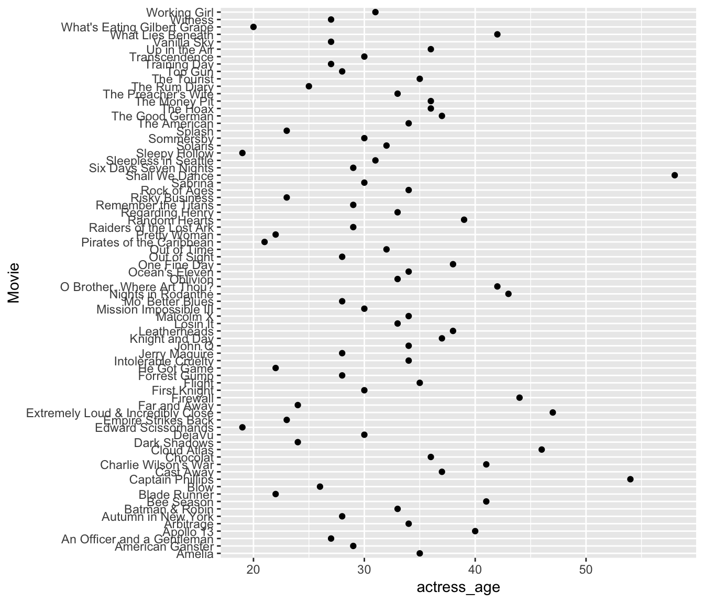
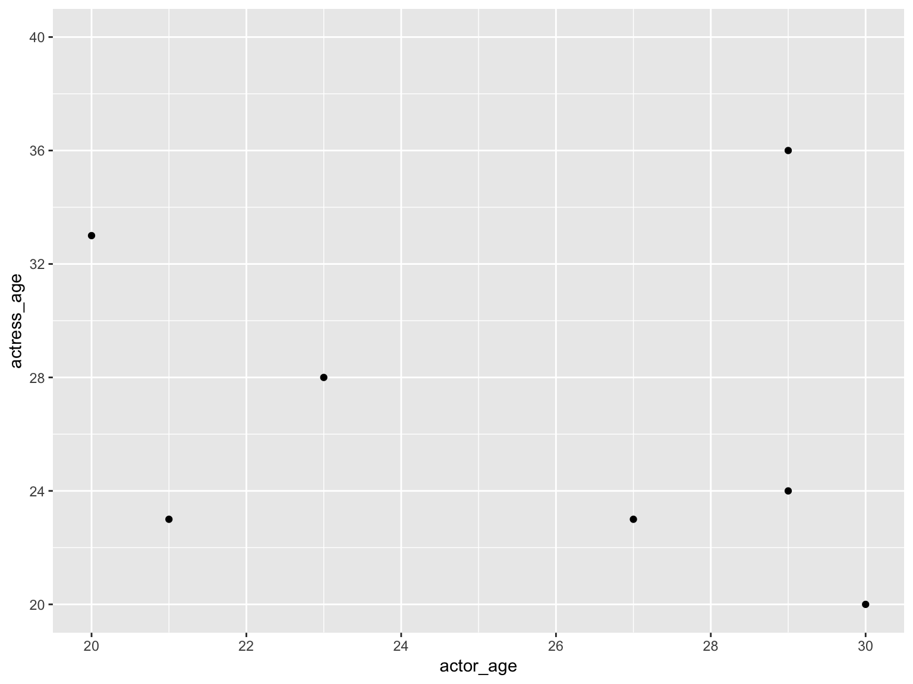
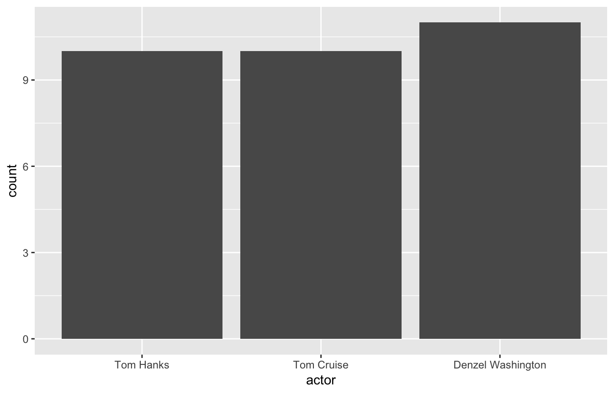
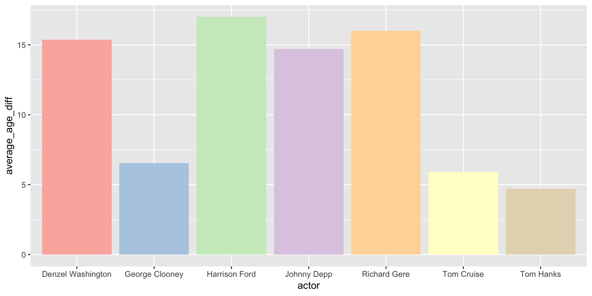
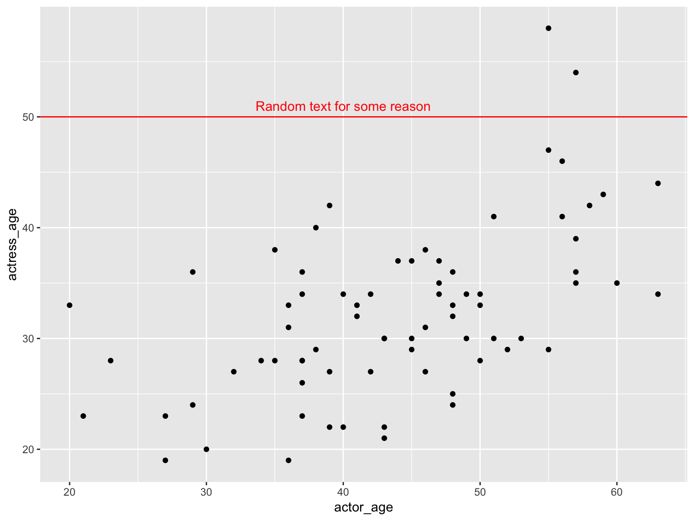
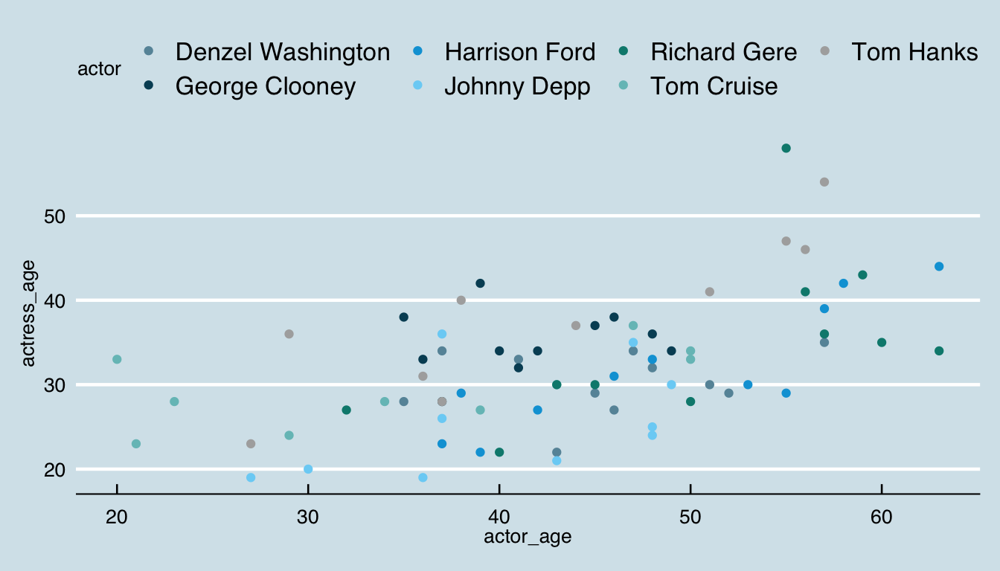
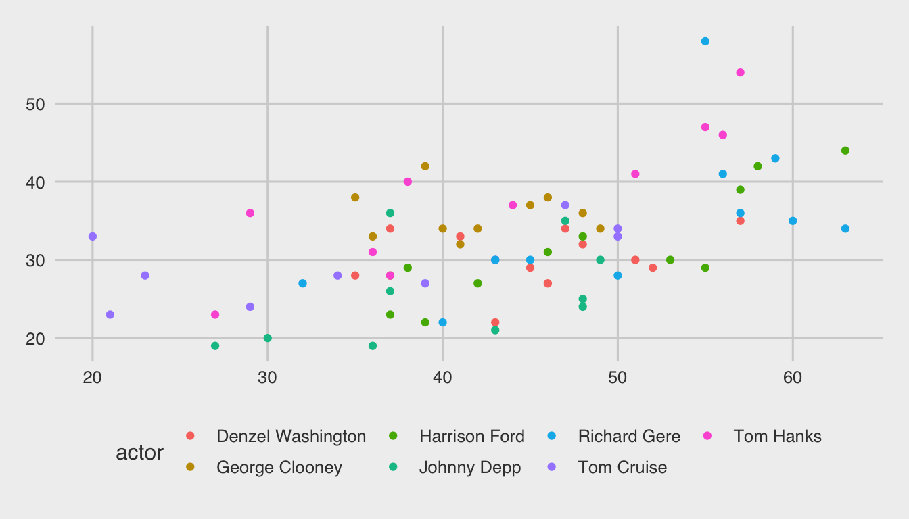

NICAR 2019: Styling visualizations
Andrew Ba Tran
3/09/2019
Customizing charts
Let’s bring that data back in again.
library(readr)
ages <- read_csv("data/ages.csv")Plot
Remember that Dot Plot we made before?
library(ggplot2)
ggplot(ages,
aes(x=actress_age, y=Movie)) +
geom_point()Plot

Reordering chart labels
This means we need to transform the data.
The easiest way to do this is with the package forcats, which (surprise!) is also part of the tidyverse universe.
Reordering factors
The function is fct_reorder() and it works like this

Factors
library(forcats)
ggplot(ages,
aes(x=actress_age, y=fct_reorder(Movie, actress_age, desc=TRUE))) +
geom_point()
Lollipop plot
This time we’re going to use a new geom_: geom_segment()
ggplot(ages,
aes(x=actress_age, y=fct_reorder(Movie, actress_age, desc=TRUE))) +
geom_segment(
aes(x = 0,
xend = actress_age,
yend = fct_reorder(Movie, actress_age, desc=TRUE)),
color = "gray50") +
geom_point()Lollipop plot

Polish for publication
ggplot(ages,
aes(x=actress_age, y=fct_reorder(Movie, actress_age, desc=TRUE))) +
geom_segment(
aes(x = 0,
y=fct_reorder(Movie, actress_age, desc=TRUE),
xend = actress_age,
yend = fct_reorder(Movie, actress_age, desc=TRUE)),
color = "gray50") +
geom_point() +
# NEW CODE BELOW
labs(x="Actress age", y="Movie",
title = "Actress ages in movies",
subtitle = "for R for Journalists class",
caption = "Data from Vulture.com and IMDB") +
theme_minimal()Polish for publication

What happened
So we added a lot of information to the labs() function: x, y, title, subtitle, and caption.
We also added theme_minimal() which changed a lot of the style, such as the gray grid background.
What if we wanted to clean it up even more?
More tweaking
ggplot(ages,
aes(x=actress_age, y=fct_reorder(Movie, actress_age, desc=TRUE))) +
geom_segment(
aes(x = 0,
y=fct_reorder(Movie, actress_age, desc=TRUE),
xend = actress_age,
yend = fct_reorder(Movie, actress_age, desc=TRUE)),
color = "gray50") +
geom_point() +
labs(x="Actress age", y="Movie",
title = "Actress ages in movies",
subtitle = "for R for Journalists class",
caption = "Data from Vulture.com and IMDB") +
theme_minimal() +
# NEW CODE BELOW
geom_text(aes(label=actress_age), hjust=-.5) +
theme(panel.border = element_blank(),
panel.grid.major = element_blank(),
panel.grid.minor = element_blank(),
axis.line = element_blank(),
axis.text.x = element_blank())More tweaking

What happened
So, we added two new ggplot2 elements: geom_text() and theme().
We passed the actress_age variable to label and also used hjust= which means horizontally adjust the location. Alternatively, vjust would adjust vertically.
In theme() there are a bunch of things passed, including panel.border and axis.text.x and made them equal element_blank().
Saving ggplots
We’ll use ggsave() from the ggplot2 package.
File types that can be exported:
- png
- tex
- jpeg
- tiff
- bmp
- svg
Saving ggplots
You can specify the width of the image in units of “in”, “cm”, “or mm”.
Otherwise it saves based on the size of how it displayed on your screen.
ggsave("actress_ages.png")## Saving 8 x 6 in imageHow it looks

Ew, okay. Needs some adjustment. I guess we can’t go with the default display for this particular chart.
Adjusted
ggsave("actress_ages_adjusted.png", width=20, height=30, units="cm")Adjusted

Much better!
You could then save it as a .svg file and tweak it even further in Adobe Illustrator or Inkscape.
More tweaking
Alright, I’m going to tweak it some more by adding actor ages. We just need to adjust the geom_segment() and another geom_point() layer so it uses the actor_age variable.
More tweaking
# First, let's permanently reorder the data frame so we don't have to keep using fct_reorder
library(dplyr)
ages_reordered <- ages %>%
mutate(Movie=fct_reorder(Movie, desc(actor_age)))
ggplot(ages_reordered) +
geom_segment(
aes(x = actress_age,
y = Movie,
xend = actor_age,
yend = Movie),
color = "gray50") +
geom_point(aes(x=actress_age, y=Movie), color="dark green") +
geom_point(aes(x=actor_age, y=Movie), color="dark blue") +
labs(x="", y="",
title = "Actor and actress ages in movies",
subtitle = "for R for Journalists class",
caption = "Data from Vulture.com and IMDB") +
theme_minimal() +
geom_text(aes(x=actress_age, y=Movie, label=actress_age), hjust=ifelse(ages$actress_age<ages$actor_age, 1.5, -.5)) +
geom_text(aes(x=actor_age, y=Movie, label=actor_age), hjust=ifelse(ages$actress_age<ages$actor_age, -.5, 1.5)) +
theme(panel.border = element_blank(),
panel.grid.major = element_blank(),
panel.grid.minor = element_blank(),
axis.line = element_blank(),
axis.text.x = element_blank())More tweaking

Scales
Let’s talk about scales.
Axes
scale_x_continuous()scale_y_continuous()scale_x_discrete()scale_y_discrete()
Scales
Colors
scale_color_continuous()scale_color_manual()scale_color_brewer()
Scales
Fill
scale_fill_continuous()scale_fill_manual()
Scales in action
ggplot(ages, aes(x=actor_age, y=actress_age)) + geom_point() +
scale_x_continuous(breaks=seq(20,30,2), limits=c(20,30)) +
scale_y_continuous(breaks=seq(20,40,4), limits=c(20,40))Scales in action
## Warning: Removed 67 rows containing missing values (geom_point).
Limits on discrete data
ggplot(ages, aes(x=actor)) + geom_bar() +
scale_x_discrete(limits=c("Tom Hanks", "Tom Cruise", "Denzel Washington"))## Warning: Removed 43 rows containing non-finite values (stat_count).
Scales for color and fill
It’s possible to manually change the colors of your chart.
You can use hex symbols or the name of a color if it’s recognized.
We’ll use scale_fill_manual().
library(dplyr)
avg_age <- ages %>%
group_by(actor) %>%
mutate(age_diff = actor_age-actress_age) %>%
summarize(average_age_diff = mean(age_diff))
ggplot(avg_age, aes(x=actor, y=average_age_diff, fill=actor)) +
geom_bar(stat="identity") +
theme(legend.position="none") + # This removes the legend
scale_fill_manual(values=c("aquamarine", "darkorchid", "deepskyblue2", "lemonchiffon2", "orange", "peachpuff3", "tomato"))Scales for color and fill

Scales for color and fill
You can also specify a color palette using scale_fill_brewer() or scale_color_brewer()
ggplot(avg_age, aes(x=actor, y=average_age_diff, fill=actor)) +
geom_bar(stat="identity") +
theme(legend.position="none") +
scale_fill_brewer()Check out some of the other palette options that can be passed to brewer.
Scales for color and fill

Scales for color and fill
ggplot(avg_age, aes(x=actor, y=average_age_diff, fill=actor)) +
geom_bar(stat="identity") +
theme(legend.position="none") +
scale_fill_brewer(palette="Pastel1")
Annotations
You can annotate charts with annotate() and geom_hline() or geom_vline().
ggplot(ages, aes(x=actor_age, y=actress_age)) +
geom_point() +
geom_hline(yintercept=50, color="red") +
annotate("text", x=40, y=51, label="Random text for some reason", color="red")Annotations

Themes
You’ve seen an example of a theme used in a previous chart. theme_bw().
But there are many more that have been created and collected into the ggthemes library.
Themes
Here’s one for the economist
library(ggthemes)
ggplot(ages, aes(x=actor_age, y=actress_age, color=actor)) +
geom_point() +
theme_economist() +
scale_colour_economist()
Fivethirtyeight
ggplot(ages, aes(x=actor_age, y=actress_age, color=actor)) +
geom_point() +
theme_fivethirtyeight()
Your turn
Challenge yourself with these exercises so you’ll retain the knowledge of this section.